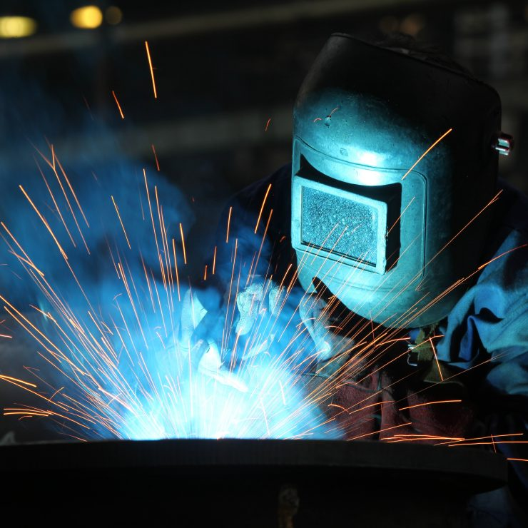
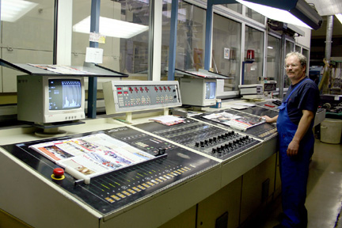
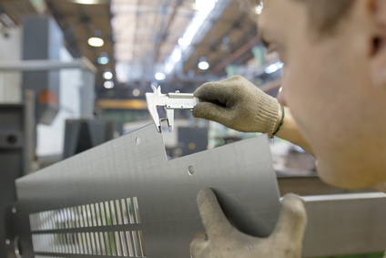
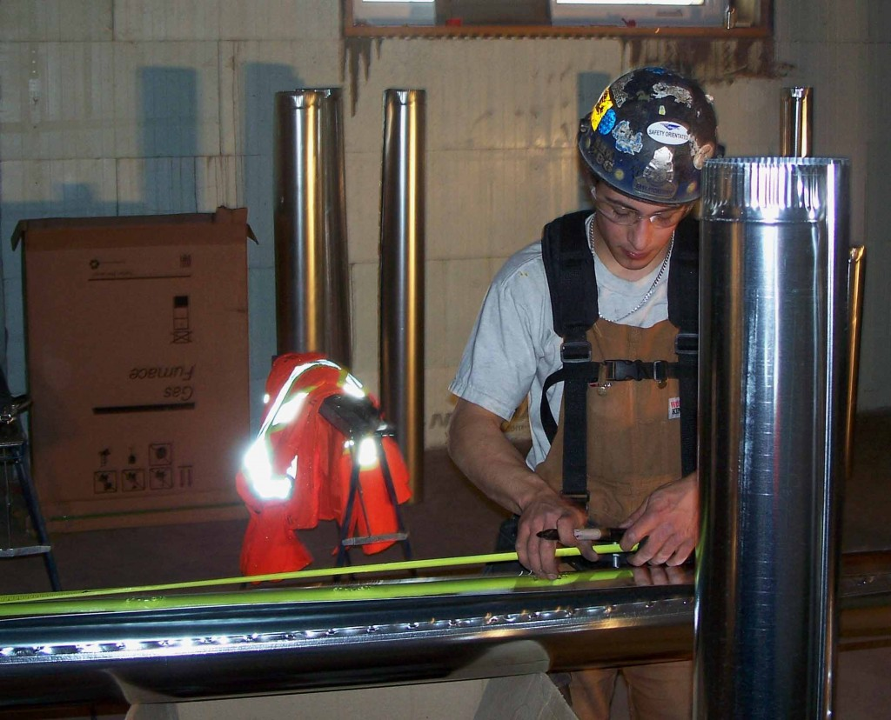
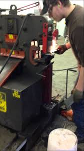

A welder or lit operator is a tradesperson who specializes in fusing materials together.
Jobs Available


Fitters and turners are highly skilled craftspeople who manufacture, construct, assemble and fit components for machinery, vehicles, installations and other apparatus or articles. Fitter and turners are also responsible for the maintenance and repair of such equipment.

Punch press operators produce parts from metal, plastic or other materials using a punch press, a computer numeric controlled (CNC) piece of equipment that makes precision cuts, grinds and punches into metal, plastic, composite or other material.

The Quality Inspector ensures each finished product meets all requirements and regulations.

A sheet metal worker is a skilled tradesman who creates, installs, and repairs sheet metal products. Most commonly these products include elements of heating, cooling, and ventilation systems, although sheet metal workers also fabricate and repair products for drainage and roofing applications.

Build and install iron or steel girders, columns, and other construction materials to form buildings, bridges, and other structures. Cut, position, and bolt down steel bars to reinforce concrete. Repair older infrastructure. Make, weld, and cut structural metal in fabricating shops. Erect steel frames.